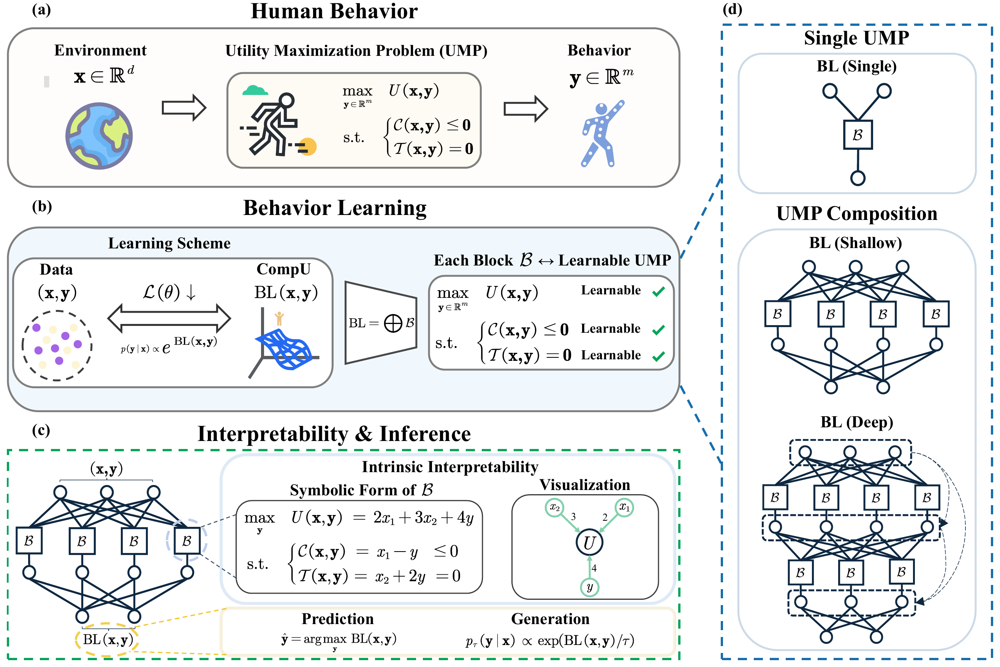

Behavior Learning (BL)
Summary
Inspired by behavioral science, we propose Behavior Learning (BL), a novel general-purpose ML framework that learns (hierarchical) optimization structures from data, as a promising alternative to neural network for scientific domains involving optimization.